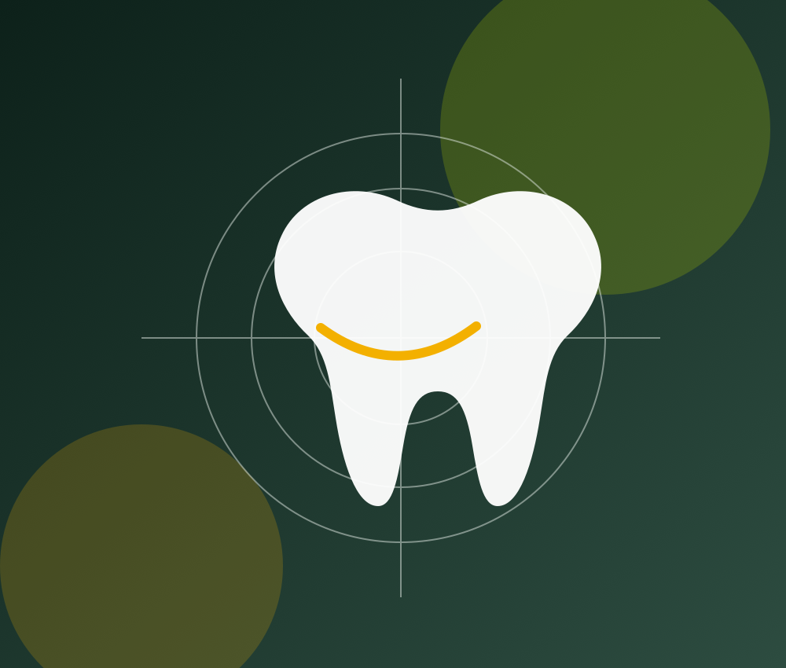

Endodontie
Bei Erkrankungen des Zahninneren kann eine Wurzelkanalbehandlung helfen, den betroffenen Zahn zu erhalten. Entscheidend sind eine sorgfältige Diagnostik, kontrollierte Aufbereitung und eine dichte Versorgung.
Die folgenden Informationen geben einen Überblick. Welche Behandlung im Einzelfall sinnvoll ist, lässt sich erst nach persönlicher Untersuchung und Beratung entscheiden.
Bei Erkrankungen des Zahninneren kann eine Wurzelkanalbehandlung helfen, den betroffenen Zahn zu erhalten. Entscheidend sind eine sorgfältige Diagnostik, kontrollierte Aufbereitung und eine dichte Versorgung.
Beschwerden an Kiefergelenken, Muskulatur oder im Biss können unterschiedliche Ursachen haben. Eine strukturierte Funktionsdiagnostik schafft die Grundlage für eine gezielte Therapie.
Implantate können fehlende Zähne ersetzen und als stabile Basis für Zahnersatz dienen. Planung, Knochenangebot, Allgemeingesundheit und individuelle Erwartungen werden vorab sorgfältig geprüft.
Defekte Zähne können je nach Situation mit direkten oder indirekten Restaurationen versorgt werden. Ziel ist eine funktionelle, langlebige und möglichst natürliche Wiederherstellung.
Fehlstellungen von Zähnen und Kiefern beeinflussen Funktion und Ästhetik. Nach Befunderhebung besprechen wir mögliche Behandlungswege und – falls nötig – interdisziplinäre Zusammenarbeit.
Laserverfahren können in ausgewählten zahnmedizinischen Situationen eine sinnvolle Ergänzung darstellen. Ob ein Einsatz geeignet ist, richtet sich nach Diagnose und Behandlungsziel.
Form, Farbe, Funktion und Haltbarkeit werden gemeinsam betrachtet. Die Versorgung wird auf die vorhandene Zahnsubstanz und die individuelle Mundsituation abgestimmt.
Regelmäßige Kontrollen und individuell passende Prävention helfen, Erkrankungen früh zu erkennen und langfristig gesunde Strukturen zu bewahren.
Eine Behandlungsempfehlung entsteht erst nach Untersuchung, Befundaufnahme und Besprechung der Optionen. So bleibt die Therapie medizinisch sinnvoll und für Sie nachvollziehbar.
